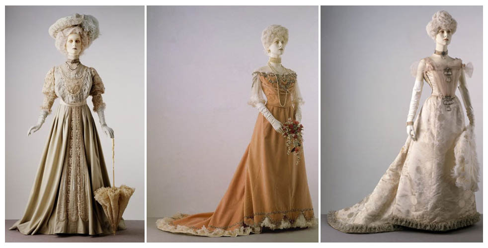

1900
A moda de 1900 é baseada na sociedade da Belle epoque (Iniciada em 1871). A Belle epoque tem base no periodo de paz e avanços tecnologicos que a Europa passava na época. esse periodo e caracterizado pela era da paz armada onde os paises Europeus estavam em paz porem se armando para uma guerra. sobre a sociedade da belle epoque, era uma sociedade em mudanças, pense comigo a alguns anos a locomoção era a cavalos derrepente era carros, os centros urbano estavam lotando, industrias surgindo, e direitos humanos e avanços socieais progressistas tomavam conta das jovens mentes francesas, era um mundo do incio da era moderna e obviamente tudo isso influenciava a moda da França
No quesito moda e cultura o papel Frances não era pouco, todos os paises se e inspiravam na França, Paris por exemplo era chamada da capital do mundo!
Moda de Paris Mulheres
Paris a capital do mundo tinha o centro da moda feminina, para uma Mulhere da alta sociedade a moda era tudo! elas precisavam encantar os pretendentes para se casarem e terem o suceso feminino, um bom casamento.
corset
O corset, uma peça popular de vestuário feminino no início do século 20, era usado principalmente para moldar a silhueta das mulheres. Este espartilho ajudava a definir a cintura e a dar suporte às costas, criando uma figura mais esbelta e "em forma de ampulheta". Além disso, o corset era considerado um símbolo de elegância e feminilidade na época, muitas mulheres o usavam como parte de seu traje diário ou em ocasiões especiais. No entanto, é importante notar que o uso prolongado do corset também foi associado a problemas de saúde, devido à compressão excessiva dos órgãos internos e restrição dos movimentos naturais do corpo.
Vestidos
Os vestidos femininos da Belle Époque eram conhecidos por suas silhuetas esbeltas e extravagantes, que enfatizavam a feminilidade e a graça. Os corpetes eram ajustados, muitas vezes decorados com rendas delicadas, bordados intricados e apliques luxuosos. As saias eram volumosas, criando uma forma de sino que era típica da moda da época. Muitos vestidos eram adornados com babados, plissados e pregas, adicionando textura e movimento às peças.eles tinham que ser obrigatoriamente longos, mostra sequer o joelhos já era um absurdo
Os tecidos escolhidos para os vestidos eram frequentemente sedas ricas, veludos, rendas e organzas, proporcionando uma sensação de luxo e opulência. As cores eram muitas vezes suaves e femininas, como tons de rosa, azul claro, creme e lavanda, embora também houvesse espaço para estampas florais delicadas e padrões ornamentais.
Moda Masculina
Os homens parisienses da época adotavam um visual distintamente formal e bem estruturado mostrando masculinidade. O traje típico para homens na França por volta de 1900 consistia em um conjunto de três peças: o casaco, a calça e a colete. O casaco era frequentemente um fraque ou um casaco de manhã, ajustado ao corpo e com cauda longa para ocasiões formais, enquanto o paletó de corte reto e simples era mais comum para o dia a dia. As calças eram estreitas e longas, com bainhas bem ajustadas e frequentemente com pregas discretas. O colete, muitas vezes de tecido luxuoso como seda, completava o conjunto, proporcionando uma camada adicional de elegância.
As camisas eram de linho branco, colarinhos altos e punhos duplos, frequentemente complementadas por gravatas borboleta ou gravatas longas de seda, que eram amarradas de maneira elaborada em volta do pescoço. Os acessórios desempenhavam um papel crucial na moda masculina da época. Chapéus eram praticamente obrigatórios ao ar livre, variando de cartolas altas para eventos formais a chapéus-coco ou chapéus de feltro para o dia a dia. Luvas de couro eram usadas com frequência, assim como bengalas ornamentadas que serviam tanto como acessórios quanto como suporte elegante. mostrar partes do corpo como ombros os joelhos eram vistos como um absurdo!